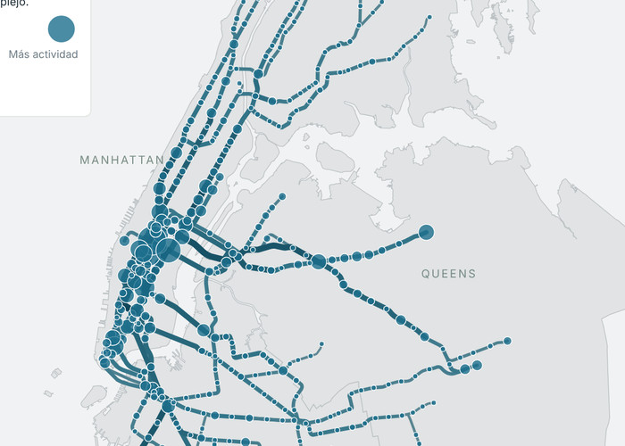
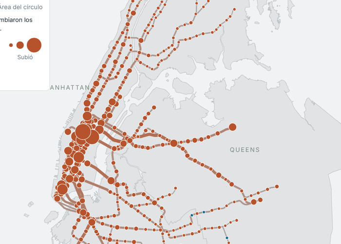
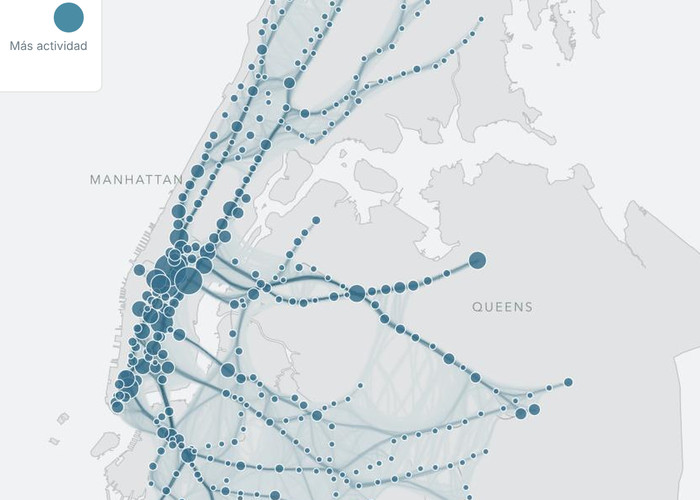
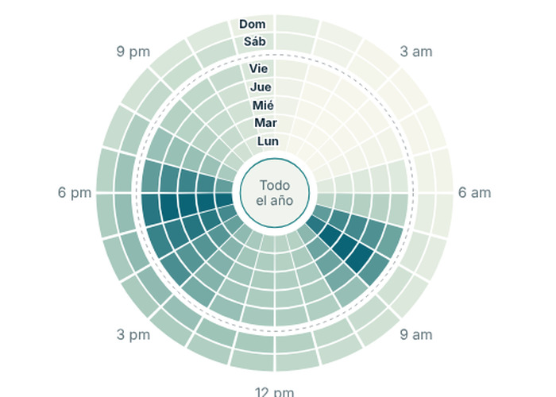
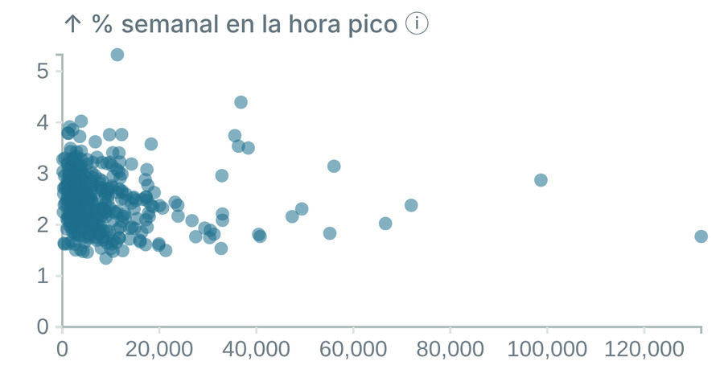
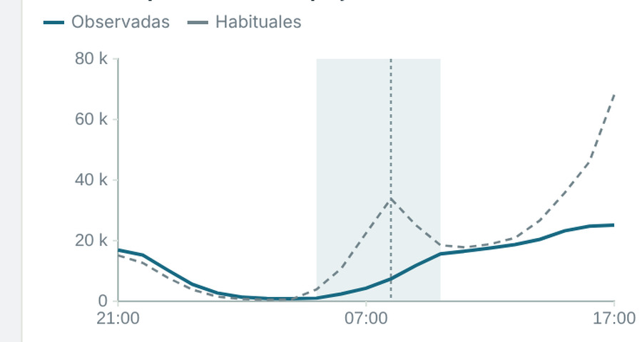

1
Datos públicos (MTA)
Viajes origen–destino estimados
567,6 M de registros · 60 meses, 2021–2025
Red de referencia GTFS 2026
424 complejos · 556 enlaces ferroviarios
Entradas por hora
131,0 M de registros · 60 meses, 2021–2025
2
Transformaciones
Semana tipo
Promedio ponderado por día de la semana y hora: 168 matrices por año
Asignación a la red
Ruta más corta de cada par y suma de viajes por tramo, de estación a estación
Detección de eventos
Contraste con lo habitual y wavelets sobre el grafo de la red: episodios
3
Vistas enlazadas (D3.js)

Mapa de flujo por tramo

Cambio entre años

Haces de flujo (WebGPU)

Reloj semanal

Afluencia y hora pico

Episodios atípicos
4
Preguntas
¿Por dónde se mueve la gente?
¿Cuándo?
¿Qué cambió entre 2021 y 2025?
Para analistas de transporte e investigadores urbanos